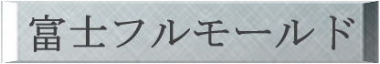
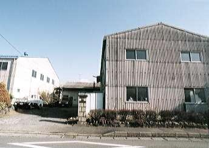
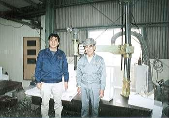
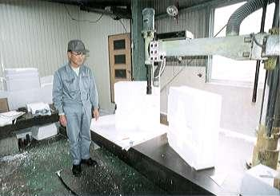
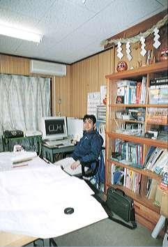
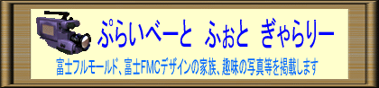

設計部門 富士ＦＭＣデザイン
| 当社は発砲スチロールによる鋳型製作及びプレス金型の設計を 行っている会社です。 正確な製品すばやい納品をモットーとしております。 |
 会社全景 |
富士フルモールド代表 長谷川 五郎 |
| 富士フルモールド及び富士 ＦＭＣ デザインは
発砲スチロールによる鋳型の製作と ＣＡＤによるプレス金型の設計を行っている会社です。 昭和３６年７月に木型による鋳型 の製作会社として設立されました。 その後フルモールド法と呼ばれるその当時最新の技術である発泡スチロールによる 鋳型製作をいち早く取り入れ、日本国内での発泡スチロール鋳型製作の先駆けとなりました。 また、平成９年１月には ＣＡＤ によるプレス金型の設計会社 富士 ＦＭＣ デザインを 設計部門として富士フルモールド内に設立いたしました。 ここ富士市浮島工業団地のなかで当社は一番ちいさな会社ではありますが、家内制 手工業の小回りの良さと、昔ながらの職人魂で 昨今の ＦＡ 化、分業化され専門の技術 者が減少する業界の中で、そのすきまを埋めるべく 日々努力し続けています。 |
 |
富士フルモールド 富士ＦＭＣデザイン |
代表 長谷川 五郎 （写真右） 代表 長谷川 哲也 （写真左） |
◆商号 富士フルモールド
設計部門（富士 ＦＭＣ デザイン）◆設立 昭和３６年７月 ◆代表者 代表 長谷川 五郎 設計部門代表 長谷川 哲也 ◆業務内容 富士フルモールド
発泡スチロールによる鋳型製作を行っています。
富士ＦＭＣデザイン
ＣＡＤによるプレス金型設計を行っています。◆事業所住所 〒417-0826
静岡県富士市中里字水門前2626-26
富士フルモールド TEL 0545-32-0120
FAX 0545-33-0069 富士ＦＭＣデザイン TEL 0545-33-0069 FAX 0545-33-0069 ◆従業員数 ４名 ◆主要取引先 （株）スギヤマ
（株）第一設計室
◆主要取引銀行 富士信用金庫
静岡銀行
◆Ｅ−ｍａｉｌ fuji-fmc@totai.or.jp
 |
|
| 工場 ： 発砲スチロールによる鋳型製作風景 | |
 |
|
| ＣＡＤルーム ： ＣＡＤによるプレス金型設計風景 |
